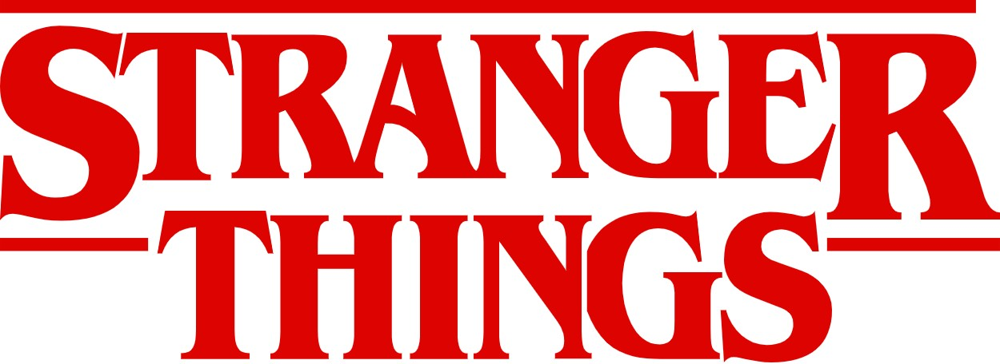

Usa los botones de zoom y arrastra las imágenes para observar cómo un formato bitmap (JPG) pierde definición al ampliarse, mientras que un vector (SVG) mantiene la nitidez.
Bitmap (JPG)

Imagen formada por píxeles. Al aumentar mucho el zoom, los píxeles se hacen visibles.
Vector (SVG)
Imagen basada en vectores matemáticos. No pierde calidad al ampliarse.